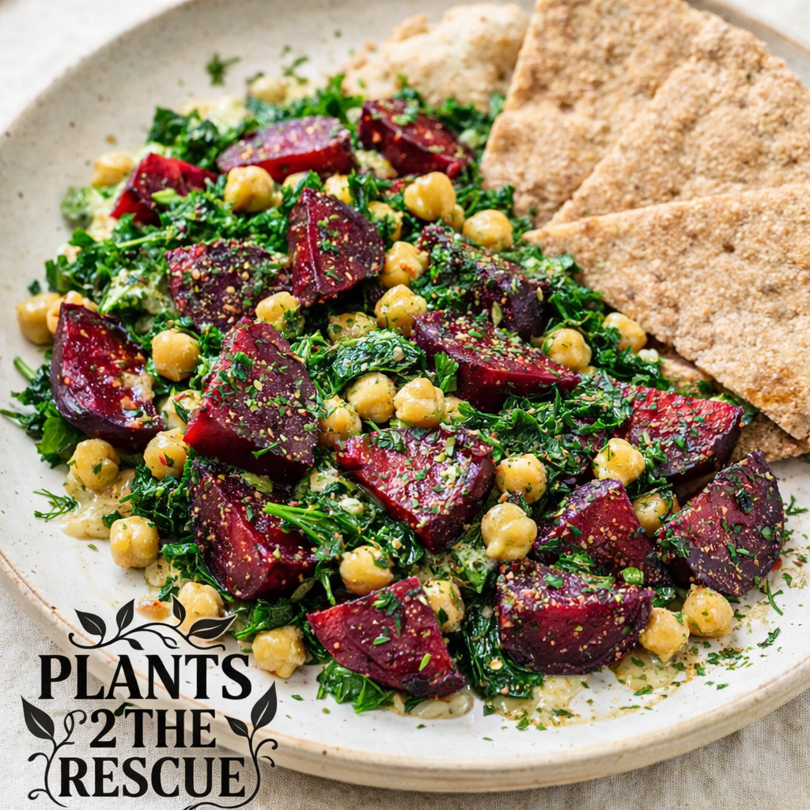
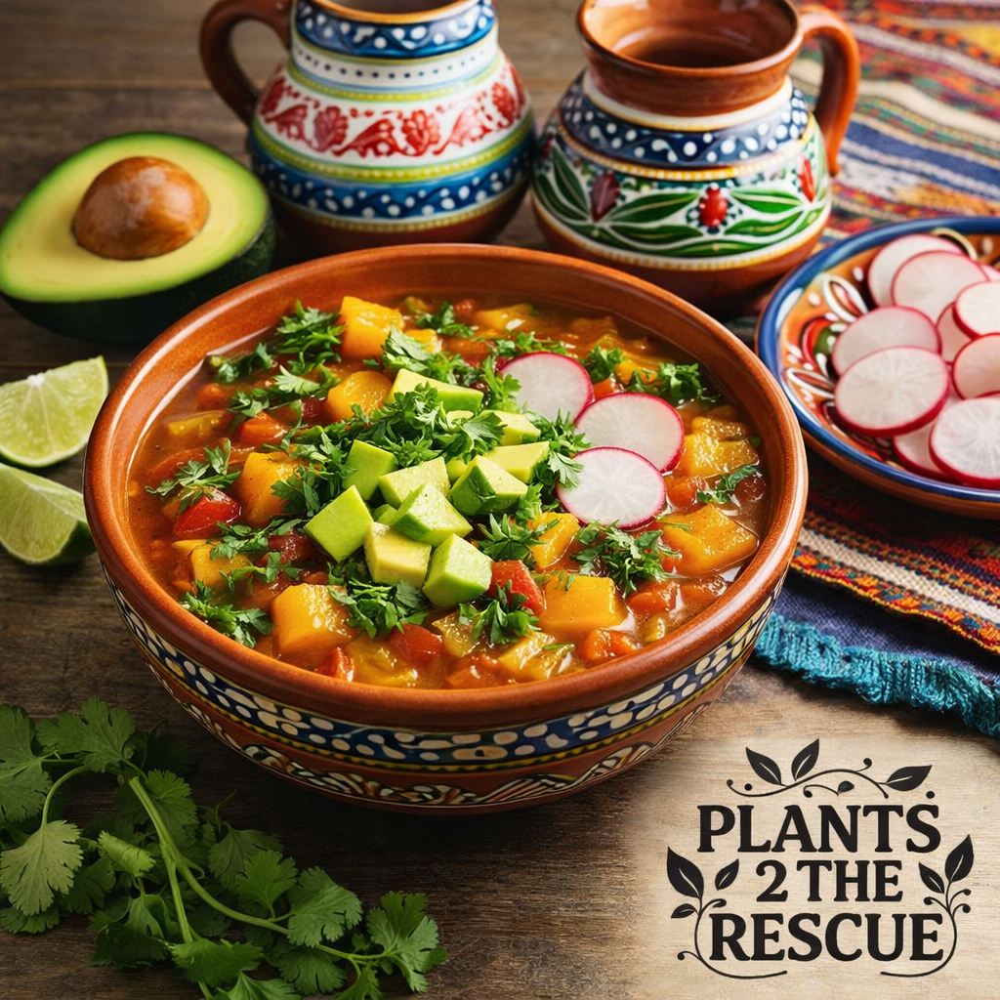
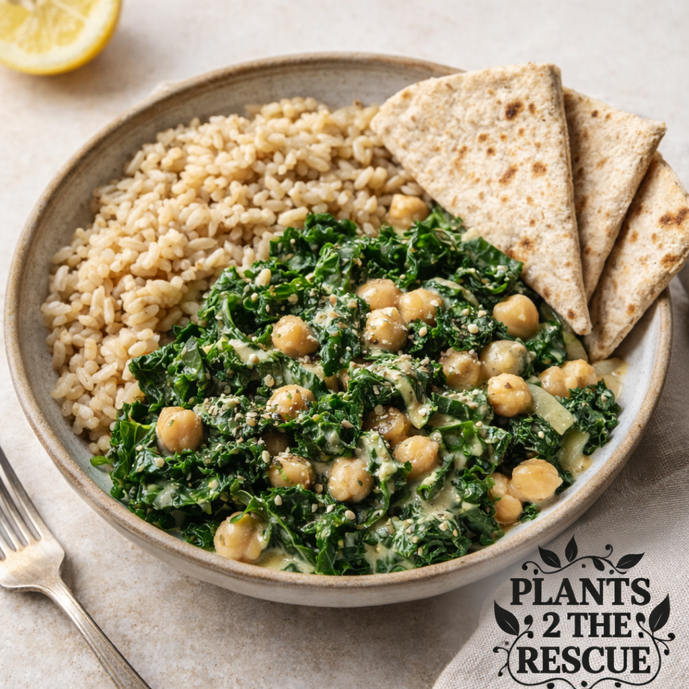
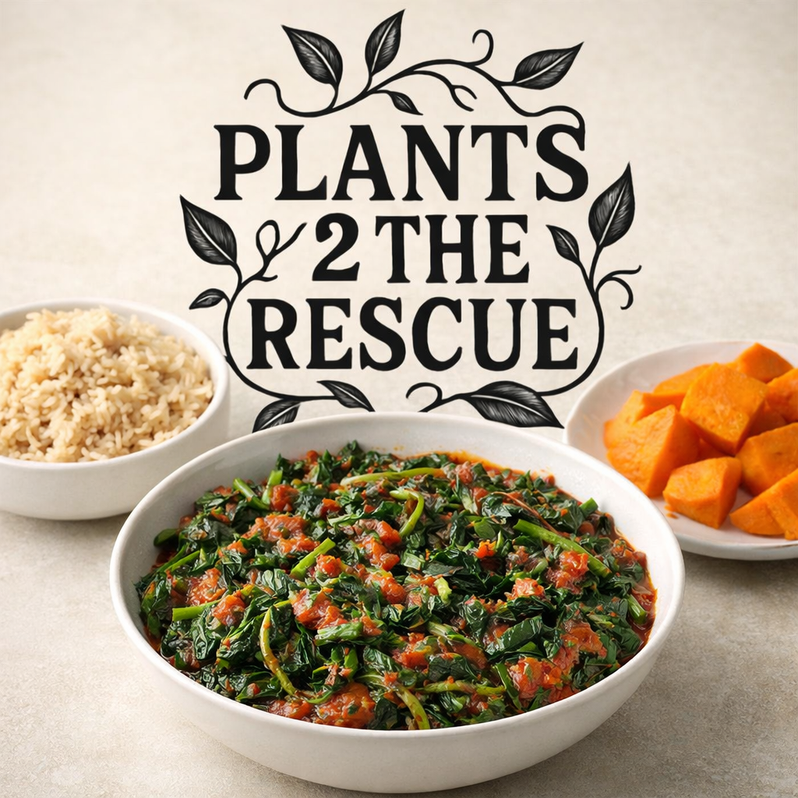
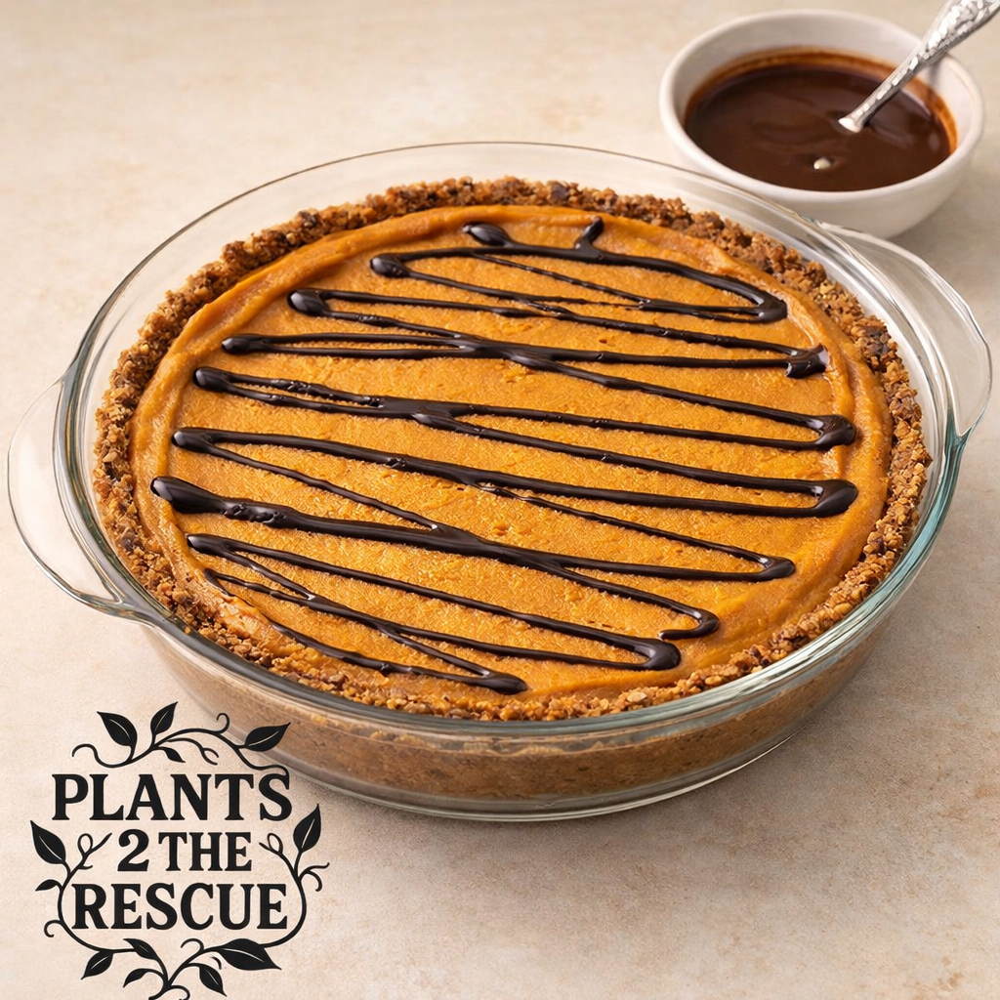
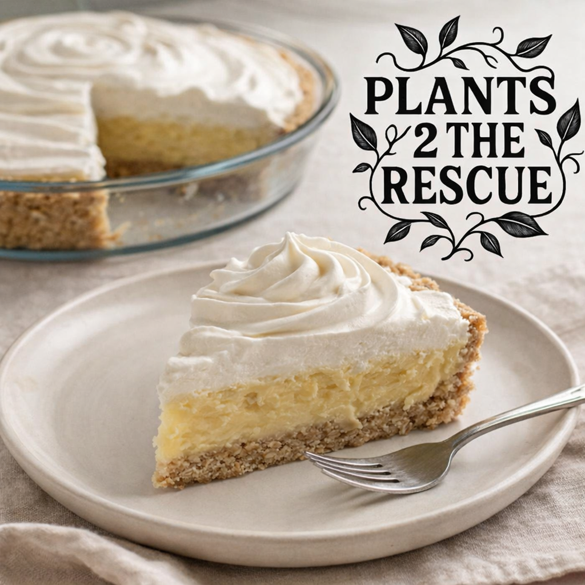

Plants 2 the Rescue
All Recipes
Whole-food, plant-based, simple nourishment.

Sweet Potato Dumplings
Comforting, tender dumplings with a naturally sweet and savory filling.

Rainbow Avocado Chickpea Power Bowl
Colorful, satisfying and packed with fiber and protein.

Smoky Lime Potato Al Pastor Skillet
Smoky, citrusy, and caramelized—bold Mexican-inspired potatoes.

Vegan Orange Spanish Rice
Spanish-style rice with Brazilian orange sunshine.

Hearty Lentil & Mushroom Shepherd’s Pie
Comfort food made with wholesome, everyday ingredients.

Afghan-Style Turnip Qorma
Slow-simmered turnips in a warming Afghan-inspired tomato and spice sauce.

Svensk Kålrotgryta
Traditional-inspired Swedish rutabaga and white bean stew that is simple, nourishing, and comforting.
Mediterranean Lemon-Herb Beets
Bright roasted beets with chickpeas, greens, and lemon—simple, nourishing Mediterranean comfort.
Mexican Acorn Squash & Lime Soup
Cozy, Mexican-inspired acorn squash soup finished with fresh lime
Lemon–Tahini Kale with Warm Chickpeas
Bright Mediterranean kale with creamy lemon-tahini sauce and comforting chickpeas.
East African–Inspired Collard Greens & Tomato Stew
A sukuma-style collard greens stew—deeply savory and beautifully simple.

Baked Apple Cinnamon Oat Cups
Perfect for breakfast or a grab-and-go snack.

Date Energy Bars
A simple whole-food energy bar powered by dates, oats, and nuts.

Lime Bliss Donuts
Baked donuts bursting with fresh lime brightness.

Lemon Cloud Cups
Bright, creamy, and refreshing.

Indonesian Nutmeg Comfort Pudding
Warm, cozy Indonesian-inspired pudding.

Vegan Matcha Green Tea Pudding
Creamy, gently sweet matcha pudding.

Persian Walnut & Cardamom Cookies
Soft, fragrant Persian-inspired cookies.

Decadent Grapefruit Cheesecake
Bright, creamy, citrus-forward cheesecake.

Mind-Blowing Lemon Dream Pie
Ultra-creamy with optional nut-free version.
Mexican Butternut Squash Canela Pie
Warmly spiced butternut squash pie inspired by Mexican flavors.
Mock Coconut Cream Pie
Coconut-free coconut cream pie made with spaghetti squash—creamy, comforting, and surprisingly classic.

Blood Orange Upside-Down Cake
Jewel-toned oranges caramelized naturally.

Persimmon–Tahini Covenant Cake
Middle Eastern–inspired, oil-free and naturally sweet.

Cranberry Covenant Cake
A tart-sweet whole-food vegan cake.

Rustic Italian Chestnut & Vanilla Tart
Earthy roasted chestnuts and vanilla warmth.

Vegan Eggnog Holiday Cake
Moist, cozy, warmly spiced.

Sugar-Free Vegan Eggnog
Creamy, cozy, naturally sweetened.